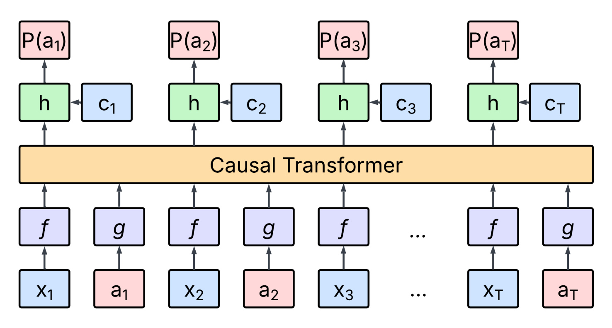
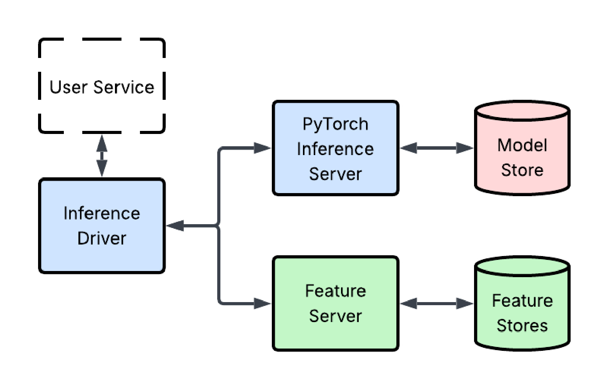
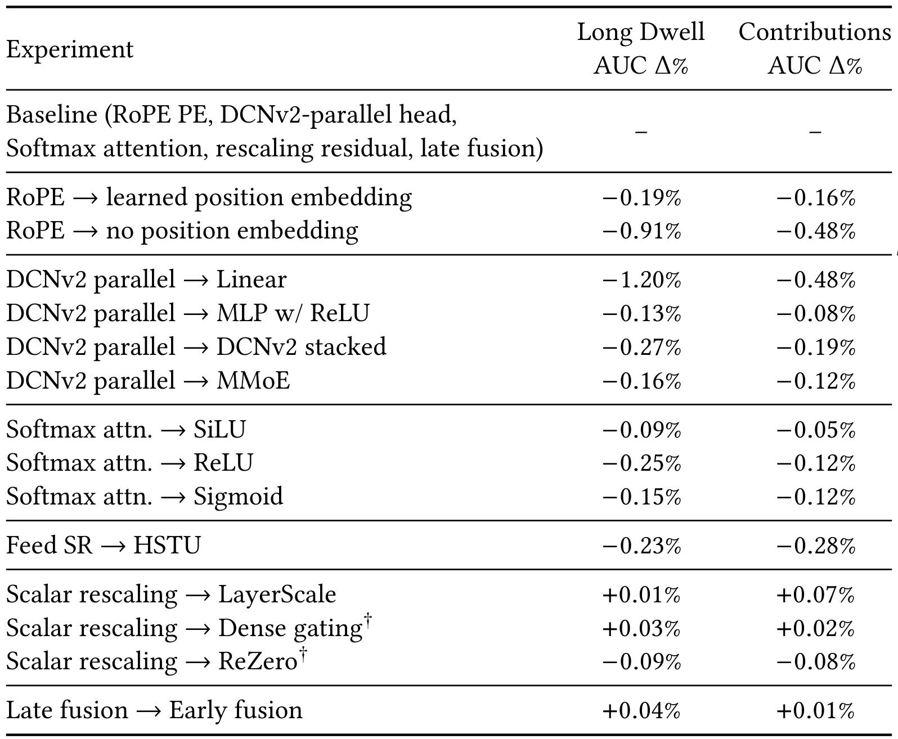
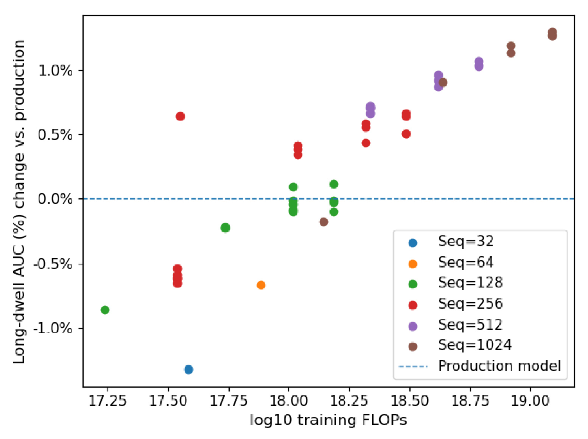
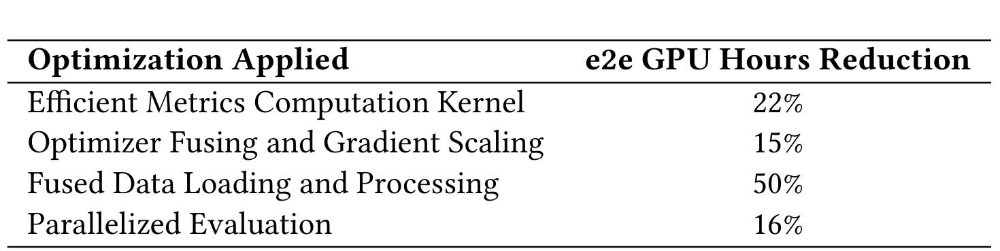
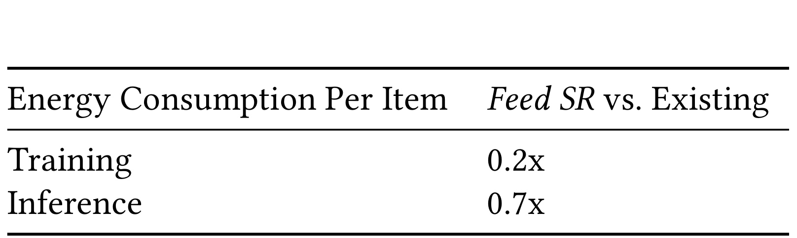
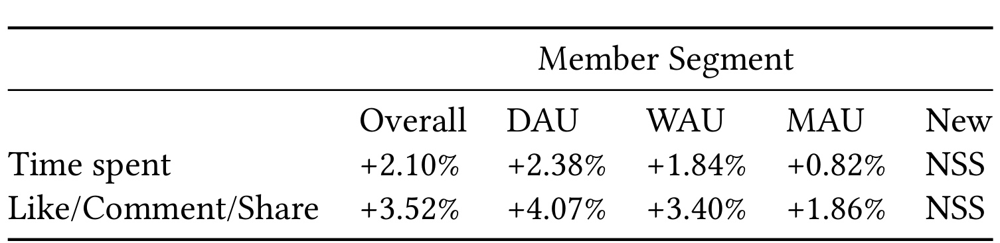

Feed SR：LinkedIn Feed 的工业级顺序推荐排序器
论文署名的 24 位作者机构均列为 LinkedIn Inc.；Lars Hertel 与 Gaurav Srivastava 标注为共同贡献，Borja Ocejo 与 Souvik Ghosh 的脚注则说明相关工作在其任职 LinkedIn 期间完成。论文入口的 v1 提交于 2026 年 2 月 12 日，本文阅读的是 2026 年 5 月 29 日修订的 v2。作者报告 Feed Sequential Recommender（Feed SR）已经替换既有 DCNv2 排序器并承接 LinkedIn Feed 的多数流量，但 PDF 中的 ACM 2018、Conference XX 与 DOI 字样都是模板占位符，不能视为正式出版信息。截至核验时未发现官方开源代码，因而本文重点放在可由论文直接核对的模型、训练、服务与实验口径，而不是给出未经验证的复现承诺。
顺序推荐在离线精度上有潜力，但 LinkedIn Feed 不能只追求更强的序列建模：它必须同时面对 12 亿以上成员的长尾历史、快速变化的内容库，以及数百毫秒延迟和数万 QPS 的实时约束。真正的矛盾是，如何在不牺牲生产吞吐与特征表达力的前提下，把长行为序列转化为可在线部署、能胜过既有 DCNv2 排序器的多任务预测。
1. 背景和问题
1.1 Feed 排序为何不是普通的下一物品预测
LinkedIn Feed 同时承载成员网络内内容、非连接成员的推荐内容，以及职位变化、工作机会、可能认识的人等多种信息。系统先从若干召回源取得候选并合并，再由排序模型预测成员对每个帖子采取动作的概率，最后把多种概率按业务目标加权并施加额外规则。论文把关键行为概括为两组：一是超过随帖子类型变化的阈值的 Long Dwell，二是 like、comment、share 组成的 Contribution；线上核心指标则是 time spent 与 like/comment/reshare 的总量。因此目标并非只判断“下一个会点什么”，而是对同一候选同时给出多个行为概率，并让这些概率在实时排序中可直接使用。
既有生产模型把每次 post impression 当成样本，标签覆盖 long-dwell、like、comment、share 等动作；未点击 impression 只以 0.1 概率保留，用负采样控制数据量。它先用三周 Feed 数据完成初始训练，之后按天增量更新，输入包含数值特征、内容 embedding、ID embedding 和类别特征，主体是 TensorFlow 实现的 DCNv2 与多任务输出层。这类点式 DLRM 的优势是能稳定吸收丰富的工程特征，以候选为独立目标做概率打分和非线性特征交叉；它并没有把同一段原始行为序列作为一次共享前向的中心对象，因此难以像 Feed SR 那样把序列计算摊销到多个候选。Feed SR 要替换的不是一个弱基线，而是已经过长期打磨、支持多任务与每日更新的生产排序器。
顺序推荐文献给出另一条路线。SASRec、BERT4Rec 擅长 next-item prediction，BST、DIN、TransAct、Pinnerformer 等工业模型会加入 target-aware 的历史编码；生成式推荐则把历史视为 token 序列，让一次 Transformer 计算服务多个目标。问题在于，LinkedIn 的排序需要数值流行度、viewer-author 关系、内容与 ID 等异质特征，而经典序列方法往往只处理 item ID 或单一行为；反过来，直接把帖子转成自然语言交给 LLM，又会让一个帖子膨胀到数百 token，把千条历史推到数万 token。论文的出发点不是证明 Transformer 普遍优于 DCNv2，而是在保留工业特征栈的同时，找到序列建模与多候选摊销计算的交集。
1.2 三个相互牵制的生产条件
第一，成员规模超过 12 亿且活跃度高度长尾。高活跃成员有密集且不断变化的历史，低活跃或新成员则几乎没有可学习的行为序列；统一增加深度或参数量并不能自动填补信息缺失。第二，Feed 的帖子语料持续变化，新帖子可能在短时间内累积大量互动，流行度与网络关系是候选时刻才最准确的信号，全部预写入历史既占存储又很快过时。第三，请求必须在数百毫秒内完成且吞吐达到数万 QPS；如果每个候选都重新编码 1000 条历史，即使离线 AUC 更高也无法上线。
这三个条件解释了论文为何把“模型”和“系统”放在同一设计闭环。更长历史提高序列信息，却把注意力复杂度和特征搬运成本一起放大；更多实时特征改善表达，却会迫使每个历史位置存放重复的上下文；更强的通用 LLM 带来世界知识，却不一定理解“点赞数 382”或网络关系强度，并显著增加 token 数。Feed SR 的核心问题定义可以概括为：以一段共享历史同时预测一批候选的多种动作，在训练时避免会话标签泄漏，在推理时避免候选间互相看见，并把 CPU 特征处理、GPU 注意力计算和每日增量训练都压到生产预算内。
还要注意论文证据的边界。作者公开了相对 AUC、相对能耗和线上增量，却没有给出绝对 AUC、模型参数量、端到端 p95/p99 延迟或最大 QPS；“工业级”主要由部署规模、优化细节和多数流量承载状态来支撑。后文因此会把作者明确报告的结果与本文的工程判断分开：前者按表格和正文复述，后者只讨论这些选择为何可能成立、迁移到别的业务还缺哪些验证。这一证据区分会贯穿全文。
2. 方法
2.1 从 impression 历史到 post/action 交错序列
Feed SR 的原始输入来自一年训练数据形成的成员历史，每个成员保留按时间从旧到新排列的最近 $T=1000$ 次 impression。由于未点击负例已被 0.1 概率下采样，1000 条记录对高活跃成员也覆盖了相当长的时间，同时保持强烈的近因偏好。位置 $t$ 的帖子含 $J$ 类特征：ID 与类别可做 embedding lookup，偏态数值可做 log transform，已经归一化的连续量可保持 identity，内容向量则直接进入对应变换。输入不是把帖子文本重新 token 化，而是把已存在的工业特征压到统一宽度，这一点使每个帖子只需一个 post token。 成员在帖子上的多个动作组成 multi-hot 向量 $\boldsymbol a_t\in\{0,1\}^M$，再经可学习投影 $\boldsymbol A_t=\boldsymbol a_tW_a+b_a\in\mathbb R^{d_{\mathrm{seq}}}$ 形成 action token。于是每次 impression 被写成相邻的“帖子、动作”二元组：帖子位置提供当时可见的条件，动作位置提供随后发生的监督信号。训练时模型在历史中的每个帖子位置预测其后动作；推理时，已观察历史保留这种交错形式，而待排序候选被附加到末端，候选没有尚未发生的 action token。同一条序列因此兼具自回归上下文、逐位置监督和多候选打分接口，而不是先得到一个冻结用户向量再逐候选点式计算。

Figure 1 从下到上画出了这一数据流。蓝色 $x_t$ 是帖子特征，粉色 $a_t$ 是已发生动作；$f$ 与 $g$ 分别代表两类输入的编码变换，交错结果共同进入 causal Transformer。Transformer 只产生一条残差流，但作者把对应 action 输入的输出丢弃，仅保留帖子位置的隐藏状态 $h$。每个 $h$ 再与浅蓝色上下文 $c_t$ 拼接，并输出不同动作的 $P(a_t)$。这意味着 action token 的角色是给后续位置提供行为上下文，而不是作为被排序对象；$c_t$ 也不是历史 token 的一部分，它承担候选时刻才能取得或不值得沿整段历史存储的特征。图中一个 Transformer 横跨所有位置，正是训练多位置预测和推理多候选摊销的共同计算基础。
论文 Eq. (1) 先定义单个帖子表示：
符号解释： $x_{t,j}$ 是位置 $t$ 的第 $j$ 类原始特征，$f_j$ 是该特征专属变换，$J$ 是特征种类数，$d_{\mathrm{seq}}$ 是序列 token 宽度。concat 不要求异质特征共享编码器，因此能保留 ID、内容、数值和类别信号的处理差异；其边界是每类特征的尺度与缺失值处理必须在训练和在线完全一致，否则 Transformer 会把预处理偏差当成行为模式。
把 $\{X_t\}$ 与 $\{A_t\}$ 分别堆叠后，Eq. (2) 给出长度为 $2T$ 的输入：
这里 $T=1000$ 意味着完整历史最多有 2000 个交错 token，且论文设置 $d_{\mathrm{model}}=d_{\mathrm{seq}}$，避免额外的输入升维。交错的关键假设是动作发生在帖子之后并能影响以后兴趣；若日志时间顺序错误、同一会话的动作标签在训练中先于真实可见时刻暴露，因果 mask 本身并不能消除泄漏，这也是作者后来必须做会话内随机化的原因。
2.2 因果 Transformer、Late Fusion 与并行 DCNv2 Head
主干是 decoder-only causal Transformer，采用 pre-LayerNorm、RoPE 和可学习标量缩放残差。Eq. (3) 在进入注意力前归一化残差流并生成 $Q,K,V$：
符号解释： $\operatorname{LN}$ 是 LayerNorm，$W_q,W_k,W_v$ 是查询、键、值投影。pre-LN 不只是常规实现偏好：作者观察到移除它会使 AUC 坍塌到 0.5。不同位置混合帖子、动作和不等时间间隔，token 统计异质性很强，先归一化能给深层残差传播提供较稳定的尺度；但它不能修复输入特征本身的离线在线分布差异。
Eq. (4) 仅旋转查询与键来编码相对位置：
$Q_r,K_r$ 是施加旋转位置编码后的查询和键。相比为每个绝对索引学习 $p_t$ 并使用 $x_t+p_t$，RoPE 共享确定性旋转，不需要为固定槽位维护 lookup。论文报告 learned absolute embedding 会让平均预测分数在训练中不稳定，而 RoPE 将其变异系数控制在约 1%；Table 1 还显示改为 learned position embedding 会损失 0.19% Long Dwell AUC 和 0.16% Contributions AUC，完全去掉位置编码损失更大。
Eq. (5) 执行多头 causal SDPA 并通过输出投影聚合：
符号解释： $\operatorname{SDPA}$ 是 scaled dot-product attention，causal 约束使历史位置只能看见自身及以前 token，$\operatorname{Concat}$ 合并各注意力头，$W_o$ 映射回模型宽度。训练中的三角因果关系与线上候选 mask 不完全相同：服务时历史仍然因果可见，但每个候选要看全部历史与自身且不能看其他候选。论文比较 Softmax、Sigmoid、SiLU、ReLU 后保留 Softmax；这与某些 HSTU 结果不同，说明注意力激活的优劣依赖行为标签、特征密度和优化配方，而不能跨业务直接照搬。
注意力与 FFN 两处都使用同一个缩放残差算子：
符号解释： $Y$ 是注意力残差更新后的状态，$Z\in\mathbb R^{B\times2T\times d_{\mathrm{model}}}$ 是 FFN 更新后的输出，$B$ 是 batch size；$\alpha$ 是初始化为 1 的可学习标量。将 $\alpha$ 初始化为 0 就得到 ReZero。作者发现普通 residual addition 会间歇性不稳定，而 scalar rescaling、LayerScale、dense gating、ReZero 都可稳定训练；dense gating 与 ReZero 在默认学习率仍发散，表中结果是在学习率减半后取得。实现按零基索引丢弃对应 action token 的奇数位置；若按 Eq. (2) 的数学一基顺序计数，$A_1,A_2,\ldots,A_T$ 实际位于第 $2,4,\ldots,2T$ 个偶数位置。保留 post 位置后，形状降为 $B\times T\times d_{\mathrm{model}}$ 再进入预测 head。这个设计没有宣称标量缩放具有最高离线 AUC，它的价值是以很低的参数和显存代价获得可重复的训练稳定性。
保留下来的帖子隐藏状态与 late-fused context 拼接。被后移的主要是 item popularity、viewer-author affinity 等数值上下文：它们沿历史的变化模式可能较弱，却在当前候选上很重要。Late fusion 一方面避免把这些量复制到 1000 条在线历史并送入 Transformer，另一方面减少主干宽度和计算；作者把三分之一 late-fused 特征改回 early fusion，只得到 +0.04% Long Dwell AUC，却让 late fusion 相对减少 12% 训练 step time，线上 top-line 指标二者持平。不过并非所有数值特征都能后移，因为有些量仍可调制序列注意力。最终 head 比较 Linear、三层 MLP、stacked/parallel DCNv2 与 MMoE，parallel DCNv2 在两个目标上最好，表明非线性交叉必要，但几种非线性 head 的差距远小于线性 head 的损失。 Feed SR 相比旧模型删掉约 80% 特征，却保留两类不可替代信号。候选流行度不是单个成员历史能恢复的全局量，加入后带来 +2.5% Long Dwell AUC；长期 viewer-author 计数补充了序列窗口之外的关系强度，移除会损失 0.3%。对少于 10 次历史动作的成员，作者用微调 Qwen3-0.6B 聚合个人资料生成 dense profile embedding，每日刷新并作为 late-fused context 输入，Long Dwell AUC 提升超过 2%。它并不替代交互序列，而是在序列证据稀疏时提供职业兴趣先验；资料缺失、文本陈旧或敏感属性治理不足仍可能把偏差带入排序。
多任务输出预测每种动作的概率，论文说明训练目标是在所有有效帖子位置应用 binary cross-entropy。用紧凑记法可写成：
符号解释： $\hat p_{t,m}$ 是位置 $t$ 对动作 $m$ 的预测概率，$a_{t,m}$ 是 multi-hot 标签，$\mathcal S$ 是本轮计损失的位置集合；冷启动时覆盖整段历史，增量训练时只覆盖新到达交互。这个表达式是对作者“多任务 BCE”的数学展开，不是论文新增编号公式。负例 impression 已在样本层按 0.1 概率保留，因此离线评估若继续下采样会改变分布并虚增 AUC，不能把采样后的绝对分数直接当线上校准质量。
2.3 稳定训练、每日增量与会话内泄漏控制
训练分为 cold start（CS）与 warm start（WS）。CS 在完整历史位置计损失，WS 每天继续输入完整上下文但只对新交互计损失，从而让模型看到旧兴趣又不反复优化旧标签。两者 global batch size 都是 1024，优化器为 AdamW；CS 使用 16 张 H200 和 OneCycleLR，WS 使用 8 张 H200 并从 CS 最终学习率继续。历史通过 Apache Airflow 与 Flyte 按日生成，同一份增量数据供训练与服务使用。作者称日数据虽然由高活跃成员主导，尚未观察到低频成员质量下降，并在低流量早期实验看到额外线上收益，但 Section 7 的正式增量不包含 WS 收益，不能把这部分定性陈述叠加到 +2.10% 与 +3.52% 上。 更隐蔽的问题是 in-session leakage。同一会话内多个帖子的 dwell 标签相关：若第一条超过 15 秒，后续条目也更可能超过 15 秒。训练序列按实际顺序放入已发生 action 后，模型会利用同一会话前项标签；线上一次生成该会话候选时，这些标签尚不存在，造成 train-serve skew。作者比较两种修复：随机打乱同一会话内条目顺序，以及显式 mask 同会话条目之间的注意力。二者都消除过拟合，后者在统计上更直接，却因数据依赖 mask 构造拖慢训练，最终选择会话内随机化。随机化解决的是模型能否依赖顺序相关标签，不等于消除了所有会话混杂；如果曝光位置、网络状态或页面停留共同影响整场会话，仍需要额外的反事实或分层验证。
训练稳定性还依赖一组联动条件：pre-LN 是硬门槛，普通 residual addition 偶发漂移，降低学习率通常有效，必要时再叠加 dense gating。实践含义是不能只复制 Feed SR 的网络图再用默认 Transformer 配方；应监控平均预测分数、各位置 AUC、梯度尺度和不同 token 类型的激活分布。论文报告 learned absolute position embedding 导致平均预测分数波动，而 RoPE 的变异系数约 1%，说明稳定性验收既要看最终 AUC，也要看训练过程与分数校准是否漂移。
2.4 扩展规律与 LLM-Ranker、TransAct 的架构取舍
作者在 sequence length $\{32,64,128,256,512,1024\}$、Transformer depth $\{1,4,8,12\}$、ID embedding dimension $\{16,32,64\}$ 上扫描，训练量约跨 $10^{17}$ 到 $10^{19}$ FLOPs。每增加一个数量级训练 FLOPs，Long Dwell AUC 约提升 0.0093；单轴比较时，增加序列长度在 Long Dwell 与 Contributions 上最稳定，因为它同时增加每个样本的信息和可监督位置，而加深网络或扩大 ID 维度只增加容量。作者据此主张更可靠的 scaling law 应联合扩展多个维度。这里的斜率是这套数据、采样和目标下的经验关系，不足以外推到无限长度，更不能从相对 AUC 直接推导线上增量。 Feed SR 之前的 LLM-Ranker 把候选特征写成文本 prompt，以“成员会点击吗”之类问题结束，微调 Llama 3 类模型输出 Yes/No，并把 Yes logit 解释为 $P(\mathrm{click})$，其他动作同理。预训练世界知识和多条目 Transformer 是优点，但三个生产缺陷更关键：点赞数等数值写成文本后利用不足；每帖数百 token 让历史达到数万 token，而 Feed SR 每帖固定为 post/action 两个 token；文本难表达网络关系强度，模型在 out-of-network 推荐表现较好，却始终没有在线胜过既有生产模型。Late fusion 的流行度/affinity 与 ID embedding，正是对这些失败点的定向补偿。
TransAct、BST、DIN 则是在旧点式 ranker 上增加历史编码。TransAct 的离线和线上指标确有改善，但序列越长，训练时间与推理延迟越高。团队尝试把多候选 scoring 移植进 TransAct，然而既有栈围绕 point-wise scoring 构建，难以让所有候选共享一次历史计算。Feed SR 的取舍不是否定 TransAct，而是把序列从外挂特征变为系统中心：训练时一次序列产生多个位置监督，服务时一次共享上下文产生多候选分数。这样才让模型结构与基础设施的摊销方向一致。
2.5 CPU/GPU 解耦服务、Shared-Context Batching 与 SRMIS
线上系统把非 GPU 友好的特征工作与 Transformer 推理解耦。CPU inference driver 负责特征获取、tracking、请求上下文变换和 member/document join；feature server 从 key-value store 取得离线预生成、以紧凑 Arrow columnar buffer 保存的成员历史与文档特征。组合后的 Arrow bytes 通过 protobuf 包装的 gRPC 传给 Python PyTorch inference server，后者可从 Arrow buffer 零拷贝得到 tensor，再从 model store 加载权重执行 GPU 前向。两个 Python 服务只使用 NumPy、PyTorch、Arrow 等高性能库，目的是把 Python 留在编排层而不让逐 item 循环进入热路径。

Figure 3 清楚标出资源所有权：User Service 只与 Inference Driver 交互；Driver 向下访问 Feature Server，再由后者访问 Feature Stores，同时把已准备的请求送往 PyTorch Inference Server；GPU 服务单独连接 Model Store。这个拆分允许 CPU feature path 与 GPU model path 独立扩缩容，也缩小每个组件的性能职责。图里 Driver 到 Feature Server、PyTorch Server 的分叉还说明零拷贝只能解决跨边界后的内存移动，前置的历史解析、稀疏转 dense 和特征 join 若仍逐文档循环，GPU 依旧会等待。因而系统优化先消除 CPU 数据处理瓶颈，再优化注意力内核，而不是只换一张更快 GPU。
CPU 侧把成员历史解析从 450 ms 降到 2 ms（225 倍），把每个特征的 sparse-to-dense 从 254 ms 降到 5 ms（50 倍）。历史解析利用 NumPy strided arrays 做零拷贝批处理，把 item-centric 的 $\mathcal O(NF)$ 访问转为 feature-centric 的 $\mathcal O(F)$；稀疏转换用 PyTorch tensor indexing 和 batched assignment 代替嵌套 Python loop，把 $\mathcal O(NMD)$ 降为 $\mathcal O(N+MD)$，其中 $N$ 是文档数、$F$ 是特征数、$M$ 是每文档平均非零值数、$D$ 是维度。相对未优化实现，CPU cycles、instructions、cache misses、branch mispredictions 分别减少 66%、71%、90%、72%。这些是局部实现与硬件计数器结果，不等同于整条请求延迟按同样比例下降。
GPU 侧每个请求通常有 $N=512$ 个候选，成员历史上限是 $T=1000$ 次 impression；由于每次 impression 展开为 post/action 两个 token，完整历史上下文最多是 $2T=2000$ 个 Transformer token。论文系统段落也使用“history length 1000”的简写，但它不能与注意力内核实际接收的 token 长度混为一谈。Shared-Context Batching 把所有候选附在同一上下文后，一次前向使用特殊 mask：历史 token 对此前历史保持 causal；候选 token 能看全部历史和自身，但不能看其他候选。这样避免为约 500 个候选重复编码共享历史，作者报告 Transformer forward 约 80 倍加速。若令实际历史 token 长度为 $L\leq2T$，候选位置 $i>L$ 的可见集合可概括为 $\{1,\ldots,L,i\}$；这个边界既实现并行评分，也阻断 cross-candidate leakage。 PyTorch SDPA 遇到自定义 mask 会退回非 Flash Attention 路径，并显式产生 $\mathcal O((L+N)^2)$ mask。团队因此实现 SRMIS，把 multi-item scoring 规则写进 Flash Attention kernel，只接收 $\mathrm{context\_length}=L$ 与 $\mathrm{candidate\_length}=N$ 两个标量，其中 $L$ 明确表示进入内核的 context token 数，而不是 impression 数。内核不物化 mask，完全无效的 tile 直接跳过，并保留 tiled computation 与 online softmax 的显存优势，平均比 masked SDPA 快约 2 倍。Shared-context batching 解决“不要重复算历史”，SRMIS 解决“不要为特殊可见性丢掉 Flash Attention”；两者优化的是不同层次，缺一都会让序列模型在吞吐上失去优势。
3. 实验结果
3.1 架构消融：最强信号来自哪里
离线消融以 RoPE、parallel DCNv2 head、Softmax attention、scalar-rescaling residual、late fusion 为 baseline，表中给出相对 Long Dwell AUC 与 Contributions AUC 变化，而不是绝对 AUC。所有负数表示替换后退化，正数表示小幅提升。由于数据、评估样本量和方差未公开，本文只按作者报告比较方向与量级，不把 0.01% 级差异解释成可迁移的确定排序。

Table 1 的第一组说明位置信息不可少：learned position embedding 分别下降 0.19%/0.16%，无 position embedding 下降 0.91%/0.48%，RoPE 同时兼顾稳定和指标。Head 组中 Linear 的 Long Dwell AUC 下降 1.20%，远大于 MLP 的 0.13%、stacked DCNv2 的 0.27% 和 MMoE 的 0.16%，说明候选上下文与序列表征之间需要非线性交叉；parallel DCNv2 最好，但非线性 head 间差距相对有限。Attention 组中 SiLU、ReLU、Sigmoid 都弱于 Softmax，Long Dwell 分别下降 0.09%、0.25%、0.15%。把 Transformer 换成 HSTU 下降 0.23%/0.28%；正文另举匹配约 $10^{17}$ FLOPs 时 Long Dwell 下降 0.21%，两处口径一个是表中整项、一个是匹配算力示例，应分别保留。
残差组更能体现“稳定优先于极小离线差”。LayerScale 为 +0.01%/+0.07%，dense gating 为 +0.03%/+0.02%，ReZero 为 -0.09%/-0.08%；后两者必须把学习率减半，因为默认学习率发散。最终 scalar rescaling 并非表内最高点，却参数少、无需额外降学习率且稳定。Early fusion 相对 late fusion 只增加 +0.04%/+0.01%，而正文报告 late fusion 节省 12% step time、线上 top-line 持平，因此作者选择更低成本方案是有证据的 Pareto 取舍。特征侧的 +2.5% candidate popularity、移除 affinity 的 -0.3%，以及稀疏历史成员 profile embedding 的超过 +2%，都比许多 block 微调更大，提示工业排序的主增益常来自“哪些信号在何处进入”，不只是换注意力函数。
3.2 扩展规律：更长历史比单独加深更可靠
作者联合扫描 6 个序列长度、4 个深度和 3 个 ID embedding 宽度，覆盖约两个 FLOP 数量级。Long Dwell AUC 对 $\log_{10}$ training FLOPs 的拟合斜率约为每十倍算力 +0.0093；production model 用水平虚线表示。该实验不是标准公开 benchmark，没有误差条、重复运行置信区间或各配置参数表，因此适合判断趋势，不适合精确预测下一次扩容收益。

Figure 2 中横轴是 $\log_{10}$ training FLOPs，纵轴是相对生产模型的 Long Dwell AUC 百分比变化，颜色区分 Seq=32 到 Seq=1024。低 FLOP 区域的短序列点多落在基线下方，随着算力和序列长度增加，点云总体向右上移动；Seq=512 与 Seq=1024 的高算力配置集中在约 +0.9% 到 +1.3% 区间。也能看到同一横坐标附近仍有离散，说明 FLOPs 不是唯一解释变量，序列长度带来的新信息比只加深网络更稳定。作者的文字结论是 length 同时增加训练位置和每样本信号，而 depth/embedding 只增加容量；本文进一步认为，若业务历史噪声高或兴趣半衰期短，长度优势可能提前饱和，复现时应按时间跨度与有效动作密度分层，而不是机械追求 1024。
LLM-Ranker 与 TransAct 的结果主要以部署经验叙述，没有完整对照表。LLM-Ranker 早期离线有吸引力、out-of-network 帖子表现较好，却从未在线超过生产模型；TransAct 则改善离线和线上指标，但长序列使训练和推理成本显著增加，多候选评分也难融入点式栈。它们支持 Feed SR 的方向选择，却不能用来声称 Feed SR 在同算力、同特征和同数据下全面优于所有 LLM 或历史编码器。更严格的比较仍需要相同候选集、参数量、延迟预算和特征可见性的受控实验。
3.3 训练、推理与能耗：摊销是否真正落地
训练系统的四项优化用 end-to-end GPU hours reduction 汇总；这些百分比来自分别应用优化时的相对改善，不应直接相加为 103%。局部时间提供了机制证据：多标签 AUC 原先每 step 约 66 ms，fused bucketized CUDA kernel 把 boolean mask 融入计算后降至 0.5 ms，误差可忽略；fused Adam 与集成 gradient scaling 移除多余 cudaStreamSynchronize，把 optimizer step 从 40 ms 降到 20 ms；C++ data loader 融合 padding、batching、packing，针对原约 300 ms I/O 瓶颈将 step time 降低超过 50%；评估改为保存所有 checkpoints 后并行前向，只加载一次数据并利用空闲显存，总 runtime 降 16%。

Table 2 保留完整表头，显示 efficient metrics kernel、optimizer fusing and gradient scaling、fused data loading and processing、parallelized evaluation 分别减少 22%、15%、50%、16% 的端到端 GPU hours。最大项是数据加载，说明 H200 算力并不能掩盖输入 pipeline；metric kernel 的 66 ms 到 0.5 ms 是局部 132 倍，却只对应 22% end-to-end 节省，也提醒读者区分热点加速比和总体收益。四项分别对应 metric、optimizer、input、evaluation 阶段，但论文没有说明它们在同一基线上的实验顺序、交互项或统计独立性，因此这些百分比既不能直接相加，也不能据此还原组合后的绝对训练时长。
推理侧的数字同样分层：历史解析 225 倍、sparse-to-dense 50 倍属于 CPU 数据阶段，shared-context Transformer forward 约 80 倍属于跨候选摊销，SRMIS 约 2 倍属于 masked attention kernel。它们的基线、作用范围不同，不能连乘成端到端加速。作者给出的硬件计数器变化和多数 Feed 流量部署证明优化进入了真实路径，但缺少 p50/p95/p99、batch 等待时间、跨区网络开销与每 GPU QPS，仍无法从论文独立重建容量规划。

Table 3 把能耗统一到 per-item：作者报告训练为旧系统的 0.2 倍、推理为 0.7 倍，并把改善归因于训练和推理中的计算摊销。训练阶段两者使用相同 GPU，但线上旧系统在 CPU 服务、Feed SR 在 GPU 服务，硬件路径并不对称；论文又没有给出绝对焦耳、利用率、批大小、数据中心 PUE 或系统边界。因此这些数字支持“在作者的部署和 per-item 口径下相对能耗更低”，却不足以证明跨硬件、跨负载的总体资源优势，更不能扩展成完整环境影响评估。还应把分母理解为被训练或被评分的 item，而不是一次请求：候选共享历史越充分，每 item 的固定成本越低；如果业务每次只有少量候选，0.7 倍的优势未必保持。复现时应同时报告每请求、每候选和单位业务增量三种口径，避免以更大的 batch 人为改善单项能耗。
3.4 线上 A/B 与部署验收
正式 A/B 以此前生产 ranker 为对照，Feed SR 已服务多数 Feed 流量。Table 4 使用 Overall、DAU、WAU、MAU、New 这些成员分群标签，但论文没有披露各组的操作性定义、互斥规则、样本量或历史密度分布；除 NSS 单元格外，作者声明其余 delta 均统计显著。特别要注意，表中结果排除了 Section 4.6.2 的 incremental training，早期小流量 WS 增益没有计入 headline。

Table 4 的总体 time spent 为 +2.10%，Like/Comment/Share 为 +3.52%；DAU 分别为 +2.38% 与 +4.07%，WAU 为 +1.84% 与 +3.40%，MAU 为 +0.82% 与 +1.86%，新成员两项标为 NSS。数值从 DAU 到 MAU 递减的现象与“可用交互历史越密，顺序模型越可能获益”的假设相容，但论文没有给出分群定义、各组真实历史长度，也没有提供 profile embedding、流行度或 affinity 的分群线上消融，因而不能把梯度因果归因给历史密度或任何一项 late-fused 特征。NSS 只表示在该实验口径下未达到统计显著，既不等于效果为零，也不证明新成员没有受益。Contribution 的增幅在各已报告显著的活跃组都高于 time spent，但两者是不同单位的业务指标，不能解读为“互动质量提高了固定倍数”。
上线验收还有两条比单次 A/B 更可复用的经验。团队建立离线 pipeline 对同一批 Feed session 重新打分，再与日志中的在线分数逐 item 比较，由此发现并修复大量线上栈 bug；评估集必须保留未下采样负例，否则会改变分布、虚增离线 AUC并削弱与线上指标对齐。另一类问题来自 Java 与 NumPy/PyTorch 混合特征变换，离线在线实现差异反复制造偏差，团队因此推进统一的 Python 特征框架。本文判断，这些工作可能和模型公式同等重要：若同输入无法得到同分数，任何 AUC 消融、SRMIS 加速或 A/B 归因都会混入实现误差。
作者结果的最强证据链是“相对离线消融 -> 局部与端到端效率 -> 多数流量下的显著线上增量”，但仍缺公开数据和独立复验。+2.10% 与 +3.52% 是 LinkedIn 内部受控实验的相对变化，不是对所有推荐场景的预期收益；NSS 也不是负向结果，而是在给定样本量与方差下无法拒绝零效应。迁移评估应首先复现用户活跃分层、候选数、历史有效时间跨度与 feature freshness，再讨论是否值得采用同样的 Transformer 宽深。
4. 总结
4.1 我的判断与工程启发
Feed SR 的主要贡献不是提出全新的注意力公式，而是把 post/action 交错序列、late fusion、多任务 parallel DCNv2 head、每日增量训练和 shared-context serving 做成同一套可运行接口。作者报告的总体 +2.10% time spent、+3.52% Like/Comment/Share，以及每 item 训练 0.2 倍、推理 0.7 倍相对能耗，支持其在这套部署口径下同时观察到质量提升与更低 per-item 消耗；由于推理硬件不同且绝对资源数据缺失，这并不构成跨硬件总体资源优势的证明。最值得借鉴的优先级是：先决定哪些信号进入历史、哪些留到候选时刻，再让训练监督与线上可见性一致，最后才扩网络容量；只复制 causal Transformer 而忽略 feature parity、会话泄漏和候选 mask，几乎必然得不到同样结果。
4.2 局限与风险
- 论文没有公开绝对 AUC、参数量、训练总时长、端到端 p50/p95/p99、单机 QPS、流量比例和完整成本，外部团队无法重建质量-延迟 Pareto 曲线。
- 线上证据来自 LinkedIn 内部 A/B；新成员两项均 NSS，正式表又排除了增量训练，因而不能据此断言冷启动或每日 WS 已被解决。
- 一年数据、最近 1000 impressions、成熟 feature store 与强 viewer-author 图关系是特定业务条件；历史更短、隐私保留更严或社交边更弱的场景可能无法复用同一配置。
- In-session randomization 消除了可利用的标签次序，却不保证去除曝光位置、网络状态与整场会话意图等共同混杂，也可能损失真实的会话内顺序信号。
- 能耗只有跨不同线上硬件路径的 per-item 相对比例，没有绝对功耗与 PUE；截至核验时未发现官方开源代码，SRMIS、特征变换和训练配方也无法独立审计。
4.3 后续跟进
- 向作者或后续版本追踪模型宽深、参数量、候选 batch、p50/p95/p99、GPU 型号与 QPS，按 DAU/WAU/MAU/New 分别画出质量、延迟和成本曲线。
- 在公开序列数据上实现 post/action 交错、多任务 BCE 与 shared-context mask，对比随机化、session-aware mask 和不处理泄漏三组，检查离线分数与模拟在线可见性的差距。
- 用 Flash Attention 可扩展接口复现 SRMIS 规则，分别测显式 mask、tile skipping、不同 $L/N$ 比例与 cross-candidate 泄漏测试，报告端到端而不只 kernel 加速。
- 持续观察 daily incremental training 是否改善稀疏和新成员，同时监控高活跃样本主导、profile embedding 新鲜度、特征漂移与离线在线逐 item 分数一致性。